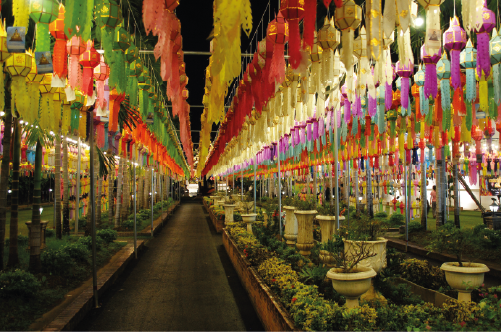
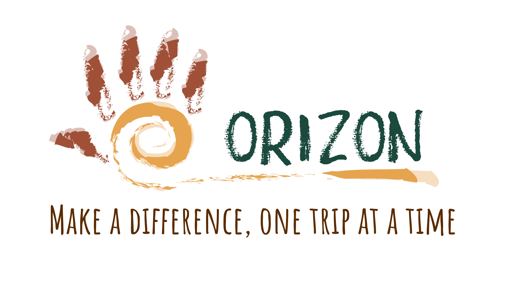
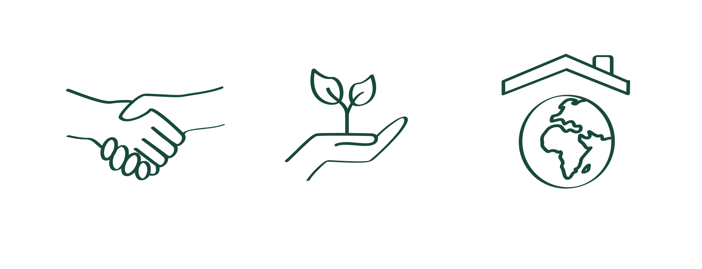
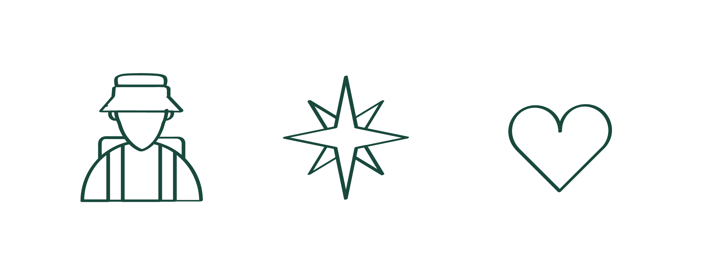
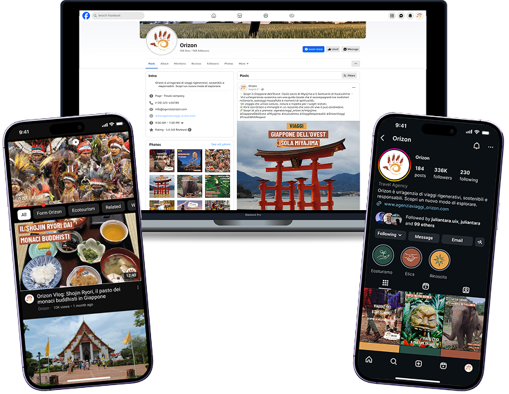

VISUAL & CONTENT DESIGN
Design e contenuti pensati per le persone
Brand identity · Editorial strategy · Social content
Un percorso tra identità visiva, strategia editoriale e contenuti social, progettati a partire dalle persone, dal contesto e dagli obiettivi della comunicazione.


01
BRAND IDENTITY & ICON SYSTEM · ORIZON
Costruire un sistema visivo a partire dai valori del brand
Un’identità pensata per comunicare prima ancora che per decorare
Orizon nasce come concept di brand dedicato al turismo responsabile e rigenerativo. Prima di lavorare sull’aspetto visivo sono stati definiti valori, posizionamento e messaggio: viaggio come relazione con persone e territori, non come semplice consumo di una destinazione.
Il logo traduce questi concetti attraverso l’unione di una mano e di una spirale, richiamando connessione, reciprocità e impronta consapevole. Palette, tipografia, proporzioni e varianti sono state sviluppate per mantenere riconoscibilità e leggibilità nei diversi contesti d’uso.
L’identità è stata estesa anche a un sistema di icone progettato su griglia, così da creare un linguaggio visivo coerente e immediatamente comprensibile. Le icone rappresentano temi come sostenibilità, comunità, cultura e viaggio e sono state pensate anche per possibili applicazioni digitali.




02
EDITORIAL STRATEGY & COPYWRITING · VOCI
Progettare una voce a partire dal pubblico
Ricerca, tono di voce e contenuti costruiti come parte dello stesso sistema
Voci è un concept di media brand indipendente dedicato a parità di genere e giustizia sociale. La strategia editoriale è partita dalla definizione del pubblico attraverso target e personas, individuandone bisogni, valori, interessi e aspettative informative.
Da questa ricerca sono stati definiti value proposition e tone of voice: critico ma accessibile, inclusivo e capace di affrontare temi complessi senza perdere chiarezza. Il blog post è stato quindi progettato combinando storytelling, dati, fonti, SEO e riflessione personale.
Headline, struttura e call to action sono state pensate per accompagnare chi legge dal primo momento di curiosità fino alla partecipazione alla community. Il copy diventa così parte dell’esperienza, non un contenuto aggiunto soltanto alla fine.
APPROCCIO
Il formato cambia. Il punto di partenza no.
Logo, icone, articoli, post social e video rispondono a esigenze diverse, ma condividono lo stesso processo: comprendere chi utilizzerà il contenuto, individuare il messaggio essenziale e scegliere il linguaggio più adatto per comunicarlo.
Il design viene quindi utilizzato come strumento per rendere informazioni e idee più chiare, accessibili e significative, mantenendo sempre una relazione tra persone, obiettivi e contesto.
Contatti
UX/UI design con attenzione alle persone
Vorrei entrare in un contesto più solido, come azienda o agenzia, dove poter crescere come UX/UI designer e lavorare su progetti digitali chiari, accessibili e pensati davvero per le persone. Mi interessano realtà attente alla qualità, alla responsabilità e al modo in cui il design può rendere le esperienze più semplici e più inclusive.
Contattami
03
SOCIAL MEDIA CONTENT DESIGN · ORIZON
Adattare il contenuto alle persone e al canale
Un’identità coerente, senza usare lo stesso contenuto ovunque
La comunicazione social di Orizon è stata sviluppata partendo dalle caratteristiche dei pubblici e delle piattaforme, invece di replicare lo stesso formato su ogni canale. Identità visiva e valori del brand restano coerenti, mentre cambia il modo di presentarli.
Per Facebook sono stati privilegiati messaggi più esplicativi e informazioni immediatamente disponibili nel post, mentre Instagram utilizza una comunicazione più visuale, autentica e sintetica. YouTube è stato invece pensato per contenuti narrativi e di approfondimento.
Post di brand awareness, promozione di viaggi ed eventi sono stati quindi adattati per formato, gerarchia e quantità di informazioni. L’obiettivo era progettare contenuti riconoscibili, ma coerenti con il comportamento delle persone nel singolo touchpoint.
